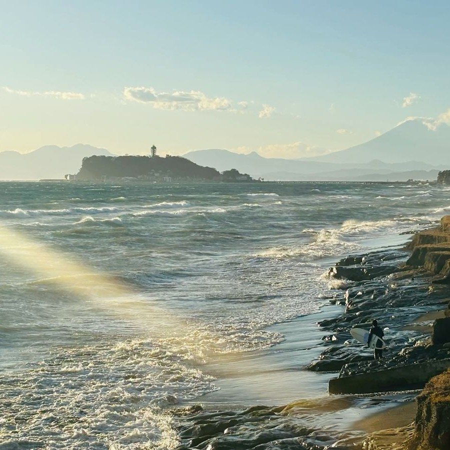
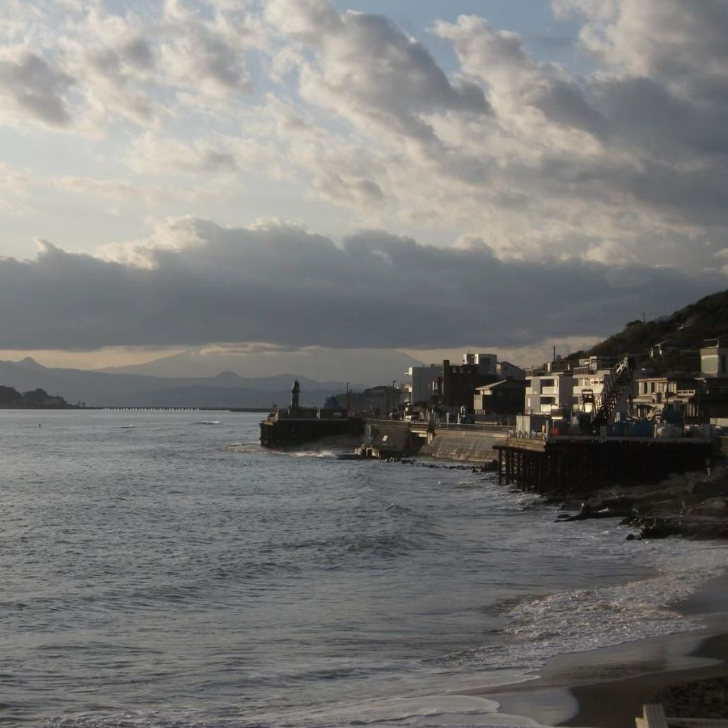

Kamakura Sea



Kamakura Sea – Your Gateway to Coastal Beauty in Japan
Experience the charm of the Kamakura Sea, one of Japan’s most popular coastal destinations near Tokyo. The sea attracts visitors with its gentle waves, sandy beaches, and views that blend history with natural beauty. Whether you’re looking for a relaxing day by the shore, a scenic seaside walk, or stunning sunset photos, the Kamakura Sea offers an authentic Japanese coastal experience filled with tranquility and beauty.